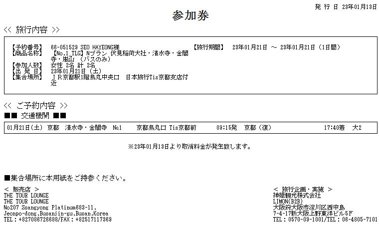

리몬버스 정보
- 탑승권 지참 필수

탑승권(참가권)은 당일날 스태프분에게 보여주시면 됩니다
미팅 장소에 출발 시간보다 10분 일찍 도착 해주셔야 합니다
교토역 09:15분 (표기된 시간에 정시 출발 입니다 유의 해주세요)
정시 출발 이므로, 미팅 시간에 늦으시면 투어 포기로 간주하여,
기다려 드리지 않으므로 이 점 유의 해 주시기 바랍니다
※ 교토역 출발은 미팅 장소에서 일본인 인솔자를 만나서, 함께 JR을 타고 JR 이나리역으로 이동하며,
첫 번째 코스인 "후시미이나리 신사" 에서 부터 한국인 인솔자 합류, 관광 후 버스에 탑승합니다
※ 교토역 도착은 마지막 일정인 "아라시야마" 에서 JR 티켓을 나눠드립니다.
인솔자 없이 "사가 아라시야마역" 으로 이동하셔서 JR을 타고 " 교토역 " 이동하시는 형식입니다※
교토역,아라시야역 마가는법
또한, 교토역 승차자의 경우 JR이용이 포함되어 있습니다
무거운짐은 숙소에 두고오세요
후시미이나리 코스에서 한국인 인솔자와 만나게 됩니다.
료쿠튀김 오쿠노히다리 정보
- 2023년 1월 21일 18:30시 예약
オクノヒダリ 京串揚げと煮込み
주소 일본 〒600-8233 Kyoto, Shimogyo Ward, Kitafudodocho,
573‐4 西洞院塩小路路地奥店舗
연락처+81 75-343-2282